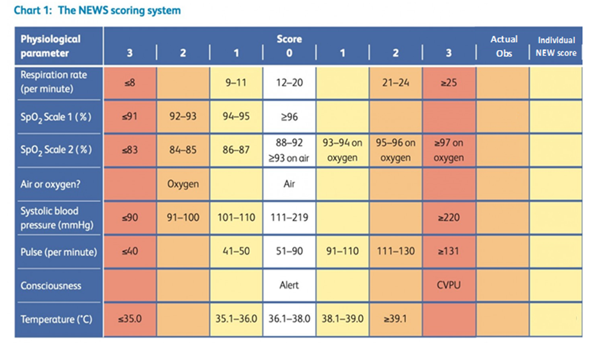

Clifton Healthcare Process
1. Has the service user fallen a height greater than 4 steps?
If no, continue with secondary survey. If yes, proceed with caution.
If the service user has fallen a height greater than 4 steps, landed on a hard surface, or is complaining of pain, call 111 for advice.
Caution: An elderly or frail person falling to the floor may easily result in significant injury.
2. Has service user lost consciousness – if no continue with secondary survey.
If yes ring North West Ambulance Service
3. Ask the service user to lie still.
4. Check the service user’s head for any obvious head injury.
Ask if they have a headache, blurred vision, feel nauseous, have vomited, feel tired/sleepy.
If yes to any of these symptoms ring 111 for advice.
5. If the service user is led on their back feel down the centre of the service user’s neck at the top of their back,
as far as you can go without them moving. Ask if they have any pain. Check that you can press hard along the spine
(if unsure how hard – press your own spine and use same/less pressure if service user has arthritis/osteoporosis).
Ask the service user not to nod/shake their head and instead to say yes/no to pain. The rest of the service user’s
spine must be checked at point 11. If the service user is led in the recovery position/ on their side feel along the spine
from the top of the spine to the service user’s bottom and establish if they have any pain when doing so, as above.
If the service user has any pain, stop and roll them onto their back and ask them to lie still. Ring North West Ambulance Service
(999) and inform them of the fall and findings.
6. Press and feel along the collar bone –
bone at top of chest which connects the shoulder to the breast bone (sternum)
– check for any obvious deformity/pain.
7. Press and feel the shoulders, front and back, upper and lower arms, wrists and hands/fingers and check for obvious
deformity/pain. Ask the service user to bend their elbow, raise and if possible, roll their shoulders, rotate their wrists
and check for any injuries and any noticeable pain/ discomfort.
Ask the service user to stop if they have any new pain or increased pain compared to normal for their long-term health conditions.
8. Press and feel chest and abdomen/stomach and assess for pain /discomfort.
Ask service user to take a deep breath and check that they can do this without difficulty or pain.
9. Press and feel the hip and pelvis region. Check for pain /obvious deformity. Check for acute incontinence,
especially if the service user is not normally incontinent as this may suggest a pelvic or vertebrae fracture.
10. Press and feel upper legs, knees, lower legs, ankles and feel to observe for signs of pain and look for obvious deformity.
Check the service user’s legs are of the same length (unless they were an odd length anyway).
If you do not suspect a leg injury ask the service user to bend their knees and straighten their legs and assess movement.
Fractured hips tend to present with the affected leg shortened and rotated outwards (away from body).
11. If no injuries are found and the service user has been led on their back,
ask the service user to roll onto their side so that you can feel down the rest of their spine from their neck to their bottom.
Establish if they have any pain, as per point 5. If the service user has any pain,
stop and roll them onto their back and ask them to lie still.
Ring North West Ambulance Service (999) and inform them of the fall and findings.
12. Has the service user been led on a hard floor for a prolonged period of time?
Please note there are no guidelines detailing onset time for Rhabdomyolysis (RAB-DOE-MY-O-LIE-SIS) (Devlin, 2021).
If the client has been on a hard floor for any length of time the assessor must have a high index of suspicion of
Rhabdomyolysis (despite it being relatively rare). The presentation can be vague but will generally include;
swelling of hands and feet (possibly a result of kidney failure, shortness of breath caused by fluid on the lungs,
fever, lethargy, confusion, agitation, weakness, nausea, light-headedness, heart palpitations, unexplained bleeding
(including blood in the urine or dark coco-cola coloured urine) and/or reduced urine output. Rhabdomyolysis is the
rapid destruction of skeletal muscle resulting in leakage of myoglobin into the bloodstream. Myoglobin is the protein
that stores oxygen in the muscles. Too much myoglobin can cause kidney damage, it also causes huge amounts of potassium
into the bloodstream which can disrupt the electrical rhythm of the heart. If there are any concerns with the secondary
survey findings or Rhabdomyolysis is suspected, please ring 111 for advice unless advised specifically above to ring 999 and advise management at CHCL. On page 11 please detail all relevant times; the time off fall and the time the client is assisted off the floor will help you determine if the client has been there for a prolonged period of time.
Note: if you call an ambulance and you wait with the client until the ambulance arrives, please take their
observations and record them on the checklist. Please repeat this every 15 minutes to check for any deterioration
in their condition too. If there is a change in their condition; i.e. it improves or worsens then ring the ambulance
service back and advise them of this change. This is also the case when referring to the GP or 111.
13. If no injuries are suspected, the service user is able to sit up or you are able to assist them to do so please do.
Support their weight using cushions/furniture, keep them warm and make them comfortable until further help arrives.
This may be an ambulance, dependent on findings or another staff member. CHCL have a Mangar Elk cushion which all
staff must be trained in before use. The Mangar Elk is kept in the office and put on charge when necessary.
The Mangar Elk is to be used to lift people from the floor – unless a passive hoist is in situ then his should
be used by skilled staff only. If you are unable to assist the service user off the floor you must make the service
user comfortable and keep them warm. Contact the Registered Manager who may request support from another Senior
member of staff or the Managing Director. Alternatively, you may be asked, if the service user has Telecare or Lifeline
in place, to contact the call centre by pressing the pendant or control panel and explain the situation and request help.
If the service user cannot be assisted off the floor by another Senior member of staff, the Managing Director or the
Falls service within Lifeline or Telecare North West Ambulance Service must be contacted (999). Wait with the service
user until the ambulance arrives.
The Mangar Elk can be used by 1, 2 or 3 trained staff members. To assist a service user onto the Mangar Elk ask them to:
1. Lift their bottom so you can insert the Elk underneath them. 2. Roll so that the Elk can be inserted at the side of
the service user and be flattened out underneath them. 3. Slide sheets can be used to slide a service user onto the Elk,
especially when in small areas. Use the slide sheet as per usual procedures.
14. If the service user can get themselves up from the floor encourage them to do so. Do not lift them from the floor
or assist them by yourself unless you assess it as safe. DO NOT endanger yourself or the service user and always
follow moving and handling principles. CHCL forbid any employee to carry out any techniques or procedures that they are not
trained in or have not been shown how to complete.
Please follow the handling plan for usual moving and handling requirements.
15. If the service user is assessed as uninjured and left at home ensure they can weight bear (as normal for them)
and that they can mobilise (normally). Please arrange with on-call or the office administration team for the service
user to be checked on in the next 2 hours.
Providing the service user consents inform family or next of kin also.
16. If the service user attends hospital the mode of transport will depend on the injuries sustained.
If only minor and the service user is able to walk and transfer, consider utilising the services of the
District Nurses to clean and dress wounds, the walk-in centre at Whitegate Drive or the Emergency Department at
Blackpool Victoria Hospital/ Royal Preston Hospital. If there are relatives/friends who can transport the service
user then utilise these services instead of ringing for an ambulance.
17. If a service user leaves the house for medical attention inform Lifeline/ Telecare (if service user has the service)
inform relatives, send the emergency details form and medications with them. DO NOT send MAR sheets/care files.
18. On leaving, ensure the property is secure and that the service user has their key/it is put in the keysafe and
the keysafe number put on the emergency details form.
